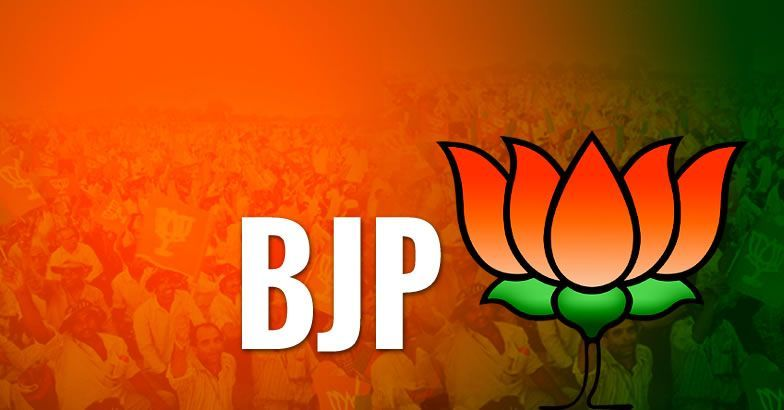
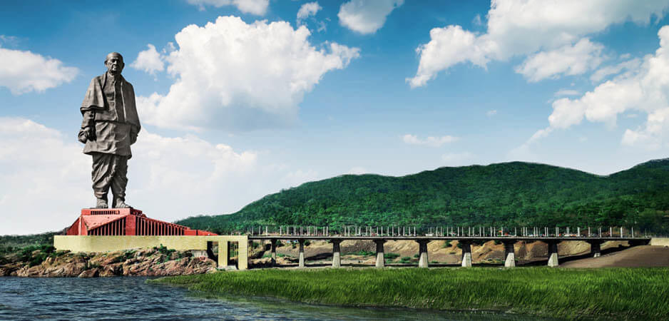
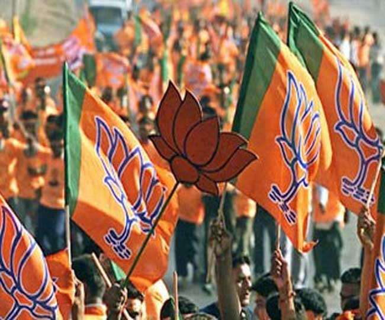

BHARATIYA JANATA PARTY
In five years since 2013, when Narendra Modi was declared its prime ministerial candidate, the Bharatiya Janata Party (BJP) has managed to widen its geographical reach and strengthen its electoral and political supremacy across the country. Today, the BJP is the richest, largest, and most dominant political party in India.. Slogans like “Party with a difference” and an appeal to the electorate to give the BJP a chance captured the confidence of the electorate.Ever since Modi became prime minister on 26 May 2014, the BJP has been working like a well-oiled electoral machine. It has won one state election after another and is dominating the national discourse like no other party has done in recent memory.
|  |
VISIONThe BJP manifesto promises to launch a set of initiatives that include "Jal Jivan Mission” under which a special programme will be introduced to ensure piped water for every household by 2024.The BJP’s recently released manifesto presents the vision and definition of the Indian nation as outlined by Prime Minister Narendra Modi who has emerged the supreme leader of the party in the last five years.The document has also promised to build “next generation” infrastructure, including gas and water grids, regional airports and wayside amenities along national highways.
|
|  |
MANIFESTOThe manifesto also reinforces the concept by strongly reiterating the party’s core agenda of scraping Article 370, introduction of a Uniform Common Civil Code and construction of Ramjanmbhoomi temple at Ayodhya. At the same time, the party has stated that it would be its “endeavour to secure Constitutional protection on issues of faith and belief”. The new dimension has been added not only to show the BJP’s commitment to Ram temple but also to expand its political territory in Kerala through the issue of allowing women of all ages to enter the Sabirmala temple. The document, following its core ideology, vows to eliminate triple talaq and nikah halala.Other strands that dominate the document are about rural India and the building of infrastructure. While sharing its vision to make India a $5 trillion economy by 2025 and the third largest economy of the world by 2030, the manifesto has promised to invest an amount of 100 lakh crore to develop the infrastructure of the country. The document has also promised to build “next generation” |
|  |
MISSIONThe mission rightly talks about boosting exports and helping small and medium entrepreneurs along with their enterprises but fails to present concrete ideas as to how the party will go about it. Absence of roadmap to make this section of enterprises competitive in global environment that have undergone tough and turbulent times in the last few years is glaring.
Another noteworthy omission is about jobs and employment. At a time when unemployment is at the highest level of the last 45 years despite the refusal of the government to accept the NSSO’s leaked data, skipping such a vital issue exposes the ruling party to opposition attacks. |